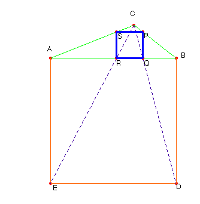

Solución del profesor de Matemáticas del IESFray Luis de León de Salamanca Saturnino Campo Ruiz

Problema nº 75. Inscripción en un triángulo dado de un cuadrado.
Dado un triángulo de lados 7 cm, 5 cm y 3 cm,
inscribir un cuadrado.
Solución.- Se construye el cuadrado de lado AB = 7 cm hacia fuera. Las rectas que unen los
vértices D y E con C cortan a AB en R y Q. Este es el lado del cuadrado buscado, homotético
del cuadrado ABED de lado 7.